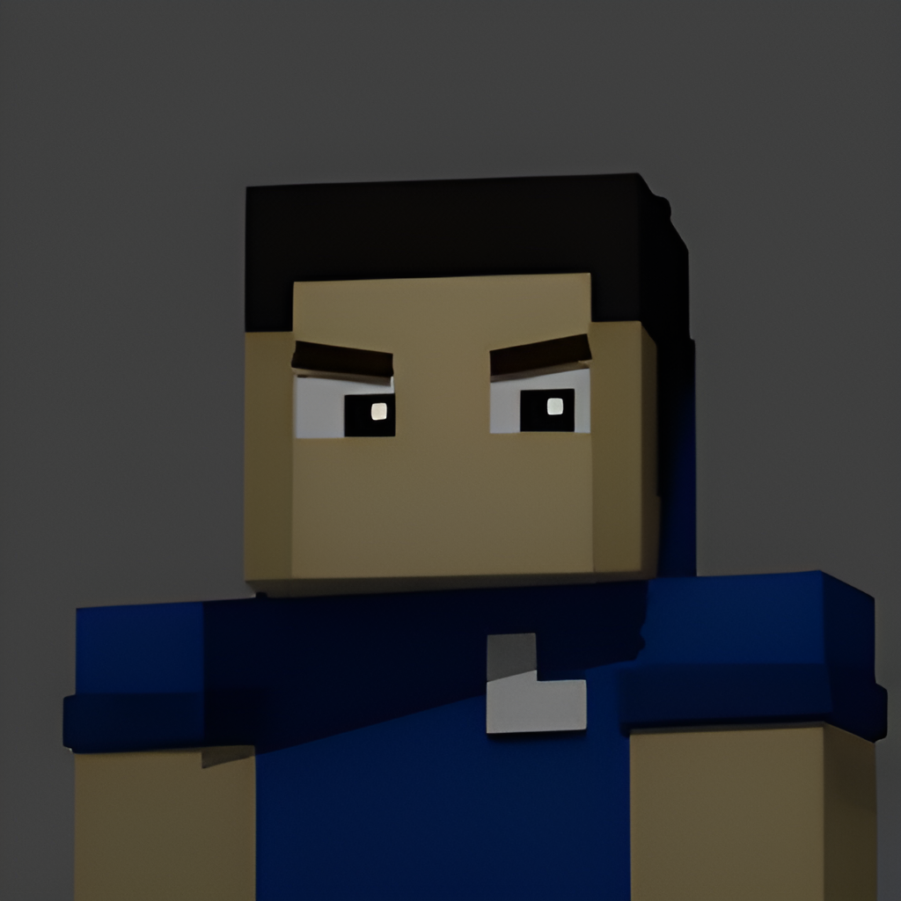

Hey there!

I’m a developer focused on Python, animation, and 3D modelling.
I build tools and automation systems, and I enjoy improving workflows and
understanding how systems work.
Some of my recent projects involve Discord bots, Python applications, and
creative projects using 3D modelling and animation tools.
I enjoy experimenting with new ideas and learning technologies that help me build better software.
When I’m not coding, I’m usually exploring new tools, refining existing projects, or working on creative digital content.
My Skills
GitHub Stats

Connected profiles